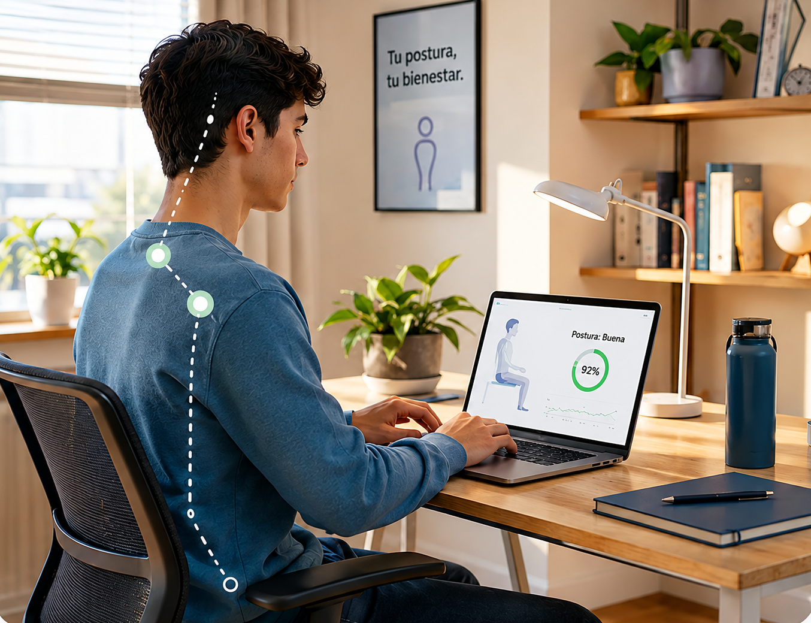

Activa el monitoreo
Autoriza la cámara y calibra tu posición en pocos segundos.
Mejorando tu postura, mejorando tu bienestar
Detecta posturas inadecuadas, recibe alertas discretas y revisa tu progreso desde una experiencia simple.

Activa el monitoreo, recibe retroalimentación y reconoce tu progreso sin procesos complicados.
Autoriza la cámara y calibra tu posición en pocos segundos.
Corrige tu postura sin perder la concentración en tu actividad.
Consulta métricas, historial y pausas realizadas durante la semana.
Información breve, visual y organizada para comprender la propuesta en la primera visita.
Identifica desviaciones de cuello, hombros y espalda.
Elige frecuencia, sonido, vibración o aviso visual.
Reconoce tendencias mediante porcentajes y gráficos simples.
Analiza la postura sin almacenar imágenes ni videos.
Vista demostrativa de cómo Posture-Check transforma el monitoreo en retroalimentación comprensible.
Mantén esta posición.
Elige el contexto que más se parece a ti.
Alertas sutiles durante clases, tareas y sesiones de estudio.

Seguimiento durante reuniones y jornadas de concentración.
Avisos configurables que respetan los momentos importantes.
Experiencias reales de personas que mejoraron su bienestar con Posture-Check.
“Posture-Check me ayudó a darme cuenta de cuánto tiempo pasaba encorvada mientras estudiaba. Ahora tengo mejores hábitos y menos dolor de espalda.”

“Trabajo muchas horas frente a la computadora y las alertas me ayudan a corregirme a tiempo. La app es simple y muy útil.”

“Antes terminaba mis sesiones de juego con tensión en el cuello. Ahora hago pausas activas y siento una gran diferencia.”
Respuestas breves para reconocer cómo funciona la plataforma.
La cámara analiza puntos de referencia de tu postura y muestra un estado visual. Si una posición inadecuada se mantiene, recibes una alerta discreta.
No. El procesamiento se realiza localmente y las imágenes no se almacenan ni se comparten.
Sí. Puedes ajustar la frecuencia y elegir avisos visuales, sonoros o por vibración.
Tiempo monitoreado, porcentaje de postura correcta, alertas, pausas e historial semanal.
A estudiantes universitarios, trabajadores remotos y jugadores que pasan varias horas frente a una pantalla.
Completa el formulario y recibe una confirmación inmediata.
Construye hábitos más saludables mientras estudias, trabajas o juegas.